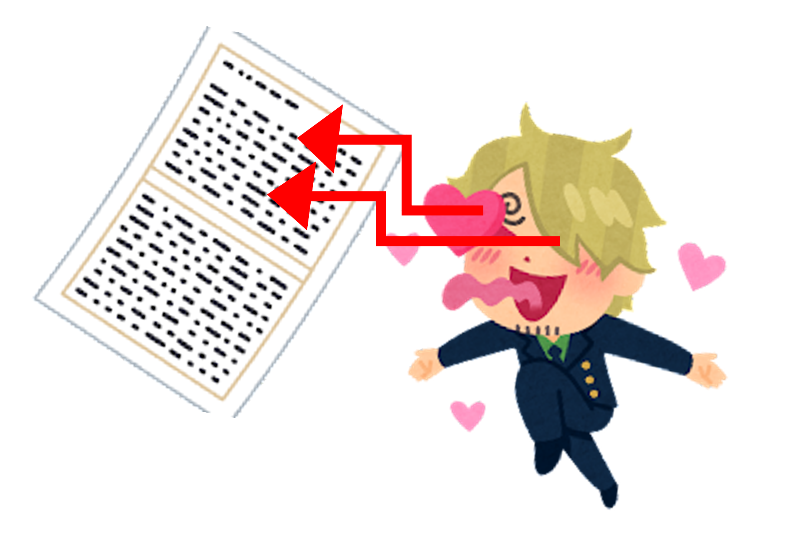

感性班とは
 私たちは、言語の「感じ方」に焦点を当てた研究をしています。例えば、かわいい声が聴取者にもたらす心理的効果や、人目を惹きつける記事のタイトル、魅力的な文章など。こうした言語と感性の問題を、ときに脳波や視線計測などの生理指標も用いながら探求していくのが、私たち感性班の特徴です。
活動内容
 2021年秋現在、博士１名・M1(学術院１年)１名・B4(学部4年)１名・B3(学部３年)２名の計５名が所属しています。
毎週1時限分グループミーティング(通称GM)という会議(報告会？)がオンライン上で行われるのですが、自分の研究や発表に関する内容はもちろん、そこから派生した面白いお話がたくさん議論される、とても活発な班です！
メンバーによって扱っているジャンルが様々であるのですが、意見交換によって新しい視点などが生まれるのでとても良い機会になります。
大量の文献に当たることも、感性班の普段の活動の一つです。感性研究はまだまだ発展途上であり、そのまま参考にできるような研究はそう多くありません。さらっと探す程度では、求める文献は見つからないのです。だから私たちは、たくさん文献を漁ります。それは網漁のごとく。Google
Scolarでの論文検索を始め、学会大会1回分をローラーすることも辞さず、貪欲に渉猟していきます。
本企画を作成したB3生も、この夏休みに「論文100本ノック」を行いました。100本！！B3生にとって、論文というものは難しく、またハードルが高いものでした。しかし100本にチャレンジすることで、「自分のやりたいこと」を明確にし、その分野の現状を知ることもでき、何よりも自信がつきました。「論文100本読んだんだよね〜」と、何度友達に得意げに話したことか…
2021年秋現在、博士１名・M1(学術院１年)１名・B4(学部4年)１名・B3(学部３年)２名の計５名が所属しています。
毎週1時限分グループミーティング(通称GM)という会議(報告会？)がオンライン上で行われるのですが、自分の研究や発表に関する内容はもちろん、そこから派生した面白いお話がたくさん議論される、とても活発な班です！
メンバーによって扱っているジャンルが様々であるのですが、意見交換によって新しい視点などが生まれるのでとても良い機会になります。
大量の文献に当たることも、感性班の普段の活動の一つです。感性研究はまだまだ発展途上であり、そのまま参考にできるような研究はそう多くありません。さらっと探す程度では、求める文献は見つからないのです。だから私たちは、たくさん文献を漁ります。それは網漁のごとく。Google
Scolarでの論文検索を始め、学会大会1回分をローラーすることも辞さず、貪欲に渉猟していきます。
本企画を作成したB3生も、この夏休みに「論文100本ノック」を行いました。100本！！B3生にとって、論文というものは難しく、またハードルが高いものでした。しかし100本にチャレンジすることで、「自分のやりたいこと」を明確にし、その分野の現状を知ることもでき、何よりも自信がつきました。「論文100本読んだんだよね〜」と、何度友達に得意げに話したことか…
今日体験していただくのは視線計測と評価実験です
視線計測とは？
別名アイトラッキングと呼ばれる視線計測ですが、人の視線の動きを追跡する際の分析手法として用いられます。実用面では、店舗の商品配置、ウェブサイトのデザイン、ソフトウエアのユーザーインターフェースなどの改善に利用されることが多いです。 一般的には、被験者の眼球の動きを記録する専用の機器を使用し、視線の経路や滞留時間を計測しますが、今回はwebカメラを使って視線計測を行います。